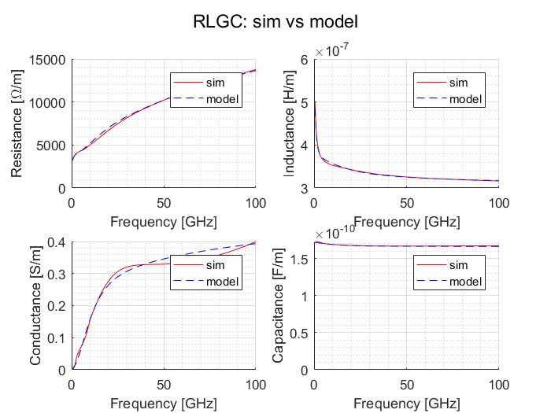
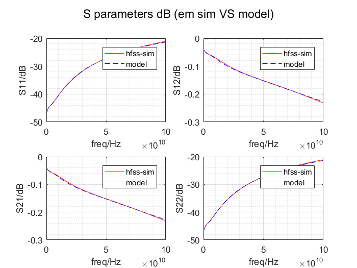
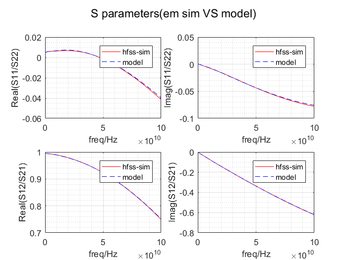
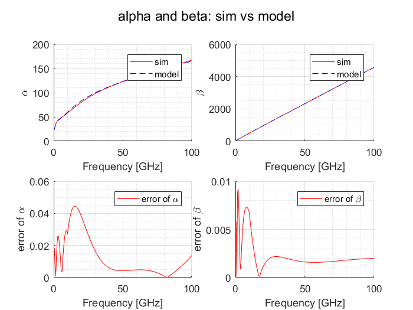
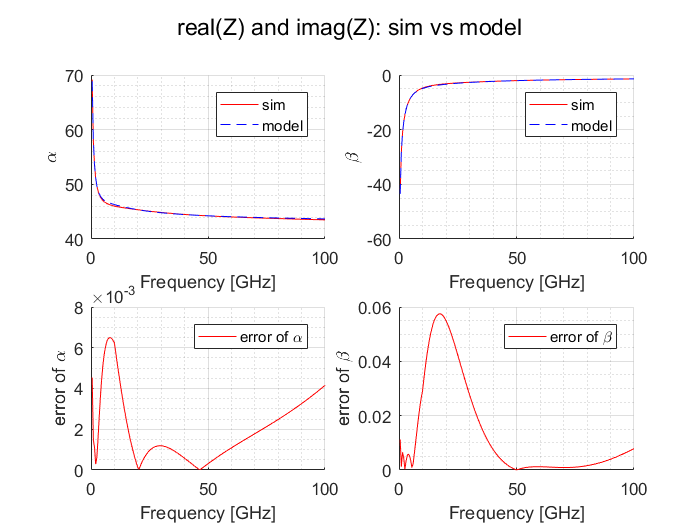

Contents
clc;clear;close all
dbstop if error;
len = 150;
width = 4;
space = 4;
file_name = sprintf('../S_parameters_sim/width/W%d/L%dW%dS%d.csv',width,len,width,space);
freq_unit = 'GHz';
zero_freq = 0;
freq_max = 100e9;
freq_min = 0.5e9;
num_pi = ceil(len/12.5-1e-6);
len = len *1e-6;
[ s_params,freq] = hfss_csv_2_sparams(file_name,zero_freq,freq_unit);
if max(freq)< freq_max || min(freq)>freq_min
error('max(freq)< freq_max || min(freq)>freq_min');
end
s_params = s_params(:,:,freq<=freq_max & freq>=freq_min );
freq = freq(freq<=freq_max & freq>=freq_min );
extract the RLGC and RLGC 0123
[RLGC_sim,gamma,Z] = S_2_RLGC(s_params,freq,len);
[ RLGC_fit,RLGC_0123_fit,f_fit ] = RLGC_2_0123( RLGC_sim,freq);
[ S_model_cal] = cpw_model_pi_net(freq,RLGC_0123_fit,len,num_pi);
[RLGC_model,gamma_model,Z_model] = S_2_RLGC(S_model_cal,freq,len);
plot the result
plot_RLGC_double(freq,RLGC_sim,RLGC_model,{'sim','model'},'RLGC: sim vs model',{'-r','--b'});
plot_Sparam_double(freq,s_params,S_model_cal,{'hfss-sim','model'},'S parameters dB (em sim VS model)');
plot_Sparam_double_Real_Imag(freq,s_params,S_model_cal,{'hfss-sim','model'},'S parameters(em sim VS model)','off' );
disp_Sparam_error( s_params,S_model_cal,'Error of S parameters');
[Err_alpha,Err_beta ]=plot_gamma_double(freq,gamma,gamma_model,{'sim','model'},'alpha and beta: sim vs model',{'-r','--b'} );
disp_alpha_beta_err( Err_alpha,Err_beta,'Error of alpha & beta' );
[Err_Zr,Err_Zi ]=plot_gamma_double(freq,Z,Z_model,{'sim','model'},'real(Z) and imag(Z): sim vs model',{'-r','--b'} );
=================================================================================
Error of S parameters
=================================================================================
Maxium error ratio of Real(S11) :448.13%
Average error ratio of Real(S11):5.97%
Maxium error ratio of Imag(S11) :26.95%
Average error ratio of Imag(S11):1.76%
Maxium error ratio of Real(S12) :0.19%
Average error ratio of Real(S12):0.05%
Maxium error ratio of Imag(S12) :1.87%
Average error ratio of Imag(S12):0.22%
=================================================================================
=================================================================================
Error of alpha & beta
=================================================================================
Maxium error ratio of alpha :4.44%
Average error ratio of alpha:1.23%
Maxium error ratio of beta :0.92%
Average error ratio of beta:0.22%
=================================================================================
    